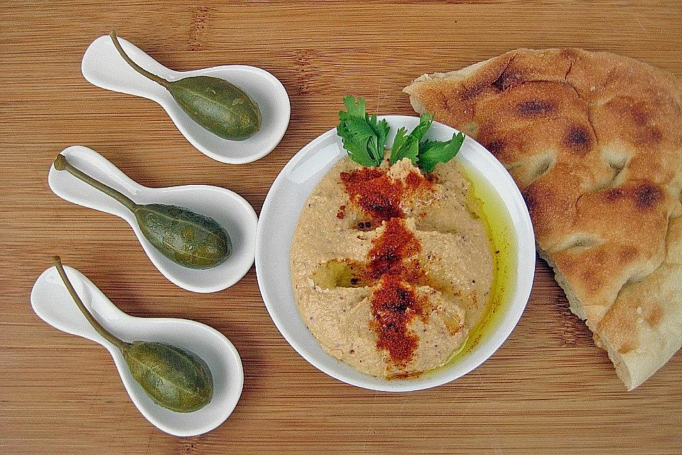

Hummus Rezept Zutaten
|

|
400g - 500g 2 El 200ml 4 Stück 1 Bund 4 El 2 El 1 Stück 1 El 1 Tl 1 Tl 1 Tl 1-2 Stück |
Kichererbsen Sesampaste (Tahina) Zitronensaft (2 Zitronen) Knoblauchzehen, durchgepresst Petersilie gehackt, zur Deko Ölivenöl Kreuzkümmelpulver (Cumin) Chili, scharf, getrocknet, fein gehackt Currypulver Salz Weißer Pfeffer Paprikapulver, rosenscharf Fladenbrot, knusprig aufgebacken |
Zubereitung
Zunächst muss man sagen, dass man natürlich auch frische Kichererbsen verwenden kann. Dies dauert mit Einweich- und Kochzeit natürlich länger
. Der Geschmacksunterschied ist meiner Meinung nach nicht so groß, als dass sich das lohnt. Mein Vater sagte mir, dass sie es in Damaskus auch schon
mit Kichererbsen aus der Dose gemacht haben. Man muss einfach darauf achten, dass die Kichererbsen in der Dose von guter Qualität sind.
Zunächst die Kichererbsen abseihen und die Flüssigkeit auffangen.
Die Kichererbsen mit der Tahina, dem Knoblauch, etwas Zitronensaft (nicht alles auf einmal, besser nachwürzen), der Chilischote, dem Curry, etwas Salz
und 2 EL Cumin in den Mixer geben. Zunächst ein Glas der aufgefangenen Kichererbsenflüssigkeit und 3 - 4 EL Öl dazugeben und mixen.
Wenn die Konsistenz zu dick ist, peu à peu ein wenig mehr von der Kichererbsenflüssigkeit dazugeben, bis eine cremige Konsistenz erreicht ist.
Mit weißem Pfeffer, Salz, Cumin und Zitronensaft abschmecken.
Mit Klarsichtfolie abdecken und mindestens 2 Stunden ruhen lassen, das ist wichtig!
Auf eine tiefe Platte gießen und mit Petersilie dekorieren. Wenn man will, kann man vor dem Servieren noch etwas Rosenpaprika mit Öl vermischen und
das darüber träufeln. Das sieht sehr schön aus, schmeckt sehr gut, macht das Ganze aber natürlich noch kalorienreicher als es ohnehin ist.
Mit frisch aufgebackenem Fladenbrot genießen!